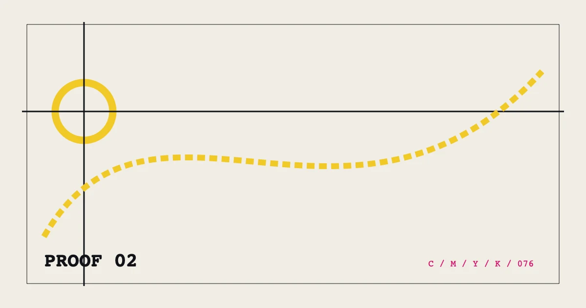

PROOF 02%%P02_EYEBROW%%
%%P02_TITLE%%
%%P02_SUMMARY%%- 编写
- %%AUTHOR_NAME%%
- 发布
- 复核
展开校样目录
%%P02_SECTION_LABEL_1%%01%%P02_LAYER_LABEL_1%% 02%%P02_LAYER_LABEL_2%% 03%%P02_LAYER_LABEL_3%% 04%%P02_LAYER_LABEL_4%%
%%P02_H2_1%%
%%P02_BODY_1_A%%
%%P02_LAYER_TITLE_1%%
%%P02_LAYER_TEXT_1%%
%%P02_LAYER_TITLE_2%%
%%P02_LAYER_TEXT_2%%
%%P02_LAYER_TITLE_3%%
%%P02_LAYER_TEXT_3%%
%%P02_LAYER_TITLE_4%%
%%P02_LAYER_TEXT_4%%
%%P02_BODY_1_B%%
%%P02_SECTION_LABEL_2%%
%%P02_H2_2%%
%%P02_BODY_2_A%%
%%P02_BODY_2_B%%
%%P02_SECTION_LABEL_3%%
%%P02_H2_3%%
%%P02_BODY_3_A%%
%%P02_BODY_3_B%%
%%P02_SECTION_LABEL_4%%
%%P02_H2_4%%
%%P02_BODY_4_A%%
%%P02_BODY_4_B%%
%%P02_FAQ_TITLE%%
%%P02_FAQ_Q_1%%
%%P02_FAQ_A_1%%
%%P02_FAQ_Q_2%%
%%P02_FAQ_A_2%%